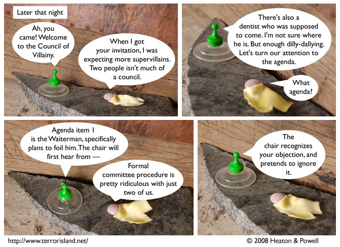

Strip #282
— Monday, March 31, 2008
The Reportress’s cape is the color of evil journalism.
Notes, Thoughts, &c.
Ben’s Notes
If you like comics that are photographs taken by me, there’s a new one you should check out. I’m starting up a side project called Request Comics. It’s going to update on Tuesdays and Thursdays, so if you read it and Terror Island, you’ll get a new strip every weekday.
Lewis’s Notes
I hope this council meeting continues for a while, so I have an excuse to use my extensive knowledge of Robert’s Rules of Order. Anyone else up for a roll-call vote?